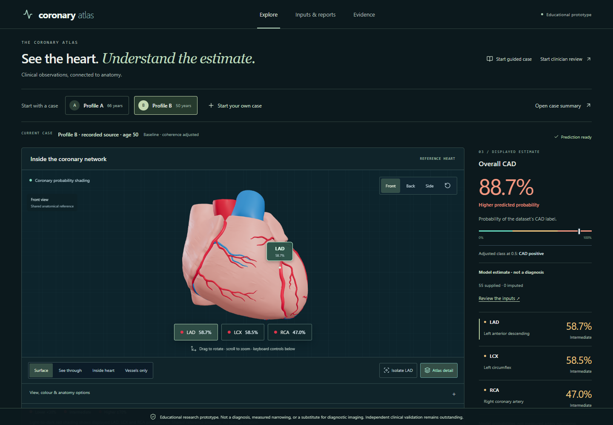

See the heart.Understand the estimate.
Explore four model estimates on a shared 3D heart. Inspect what influenced a result, review report text, and follow the evidence.
No login, password or API key. Start with A/B or enter your own de-identified observations. The complete application runs on Railway independently of the entrant’s laptop.
